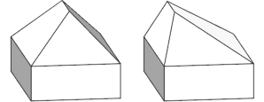
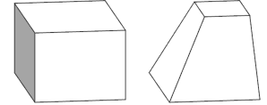
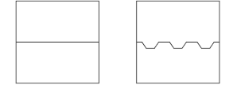
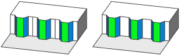
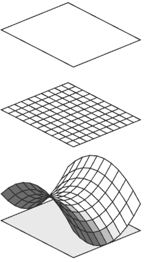
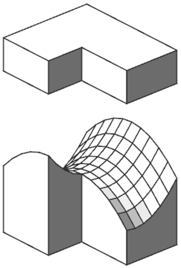
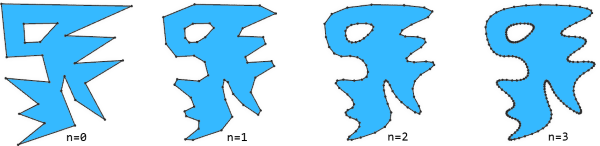
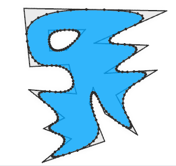

modify Operation
Syntax
modify(component) { selector operator operations | ... }
modify(component, scopeAlignment) { selector operator operations | ... }
Parameters
- component, scopeAlignment, selector, operator, operations
These parameters are the same as for the comp operation.
Description
The modify operation edits selected parts of the current geometry. Like the comp operation, it divides a shape into topological components (defined by component, selector, operator) that results in new shapes that are modified according to the specified operations.
Unlike the comp operation, the modify operation always performs shape recomposition implicitly (see Shape Recomposition), i.e., recombining the edited components with the remaining geometry. For face components, the following two lines are therefore equivalent:
- modify(f) { ... }
- inline(recompose) comp(f) { ... | all: X. }
The modify operation only changes the current shape's geometry and does not add successor shapes to the shape tree.
Comp shape attributes
Each generated shape has a number of comp shape attributes set. For more information see comp attribute.
Related
- comp operation
- Rule Inlining
- tag operation
- deleteTags operation
- comp attribute
- Shape Recomposition: Essential Knowledge
Examples
Modified Roof Ridge
|  |
Init -->
extrude(5)
comp(f) { top: ModifiedRoof | side: Facade. }
ModifiedRoof -->
roofHip(45)
modify(e) { ridge: t(0,2,0) X. }
The ridge of the roof is moved 2 meters to the side.
|
Tapered Mass
|  |
Init -->
extrude(5)
modify(f) { top: s('0.5, '0.5, '0.5) X. }
The top of a extruded mass is rescaled to create slanted facades.
|
Corrugated Facade
|  |
const OpeningL = 2
const Depth = 0.75
const InnerL = 1
Init -->
inline(recompose) split(x) { 5: tag("Front") F.
| ~1: tag("House") H. }
modify(e) { isTagged("Front") && isTagged("House"):
split(x) { ~4: CreateOutset }* }
CreateOutset -->
split(x) { ~1 : Wall.
| 0.01 : tag("Side") Side.
| OpeningL: tag("Outset") Outset
| 0.01 : tag("Side") Side.
| ~1 : Wall. }
Outset --> t(0,-Depth,0) s(InnerL,0,0) center(x)
The input shape is first divided into the house and front footprint, tagged, and recombined using inline(recompose). The connecting edge is then modified and split into repeated outsets. Each outset is built by subdividing the edge, tagging reference parts, and transforming the center segment. Shape recomposition automatically merges the modified edges with the footprints, producing the corrugated pattern.
|
|  |
Init -->
...
comp(f) { isTagged("House"): BuildHouse }
BuildHouse -->
extrude(3)
cleanupGeometry(all,0)
comp(f) { isTagged("Side") : Blue
| isTagged("Outset"): Green
| all = White. }
Blue --> color("#0399F5")
Green --> color("#09DE1F")
The extrude operation automatically propagates the previously appied edge tags to the corresponding facades. The tags are used to color the facades. The cleanupGeometry operation is used to merge adjacent coplanar wall polygons.
|
Hyperbolic Grid
|  |
attr Max_Height = scope.sx/2
Paraboloid with(
center := getPivotCoord(scope.sx/2, 0, scope.sz/2)
cenX := center[0]
cenZ := center[2]
a := getDampingFac(scope.sx/2)
b := getDampingFac(scope.sz/2)
yPos := scope.ty
)-->
inline(recompose) Grid
modify(v, noAlign) { all: Move(cenX, cenZ, a, b) }
set(scope.ty, yPos)
Grid -->
split(x,noAdjust) { '0.1: split(z) { '0.1: Cell. }* }*
Move(centerX, centerZ, a, b) with(
x := scope.tx - centerX
z := scope.tz - centerZ
)-->
t(0,hyperbolic(x,z,a,b),0)
hyperbolic(x,z,a,b) = (z*z)/(b*b) - (x*x)/(a*a)
getPivotCoord(x,y,z) = convert(scope,pivot,pos,[x,y,z])
getDampingFac(l) = l / sqrt(Max_Height*0.5)
The example first splits the input shape into a 10x10 grid using inline(recompose). Then, each vertex is moved to create a hyperbolic surface. Finally, we set scope.ty back to its original value to ensure the new shape is fully above the input shape. The rule uses the Max_Height attribute to control the height of the hyperbolic surface (preventing the quadratic function to explode on large input shapes). The noAlign parameter ensures that all vertex scopes share the same coordinate system. It keeps the original pivot, so each vertex’s scope remains relative to that reference, allowing its position to be read directly from the scope translation. |
Hyperbolic Roof
|  |
Init -->
extrude(5)
modify(f,noAlign) { top: Paraboloid }
The Paraboloid rule can be used directly to modify the top of an extruded mass.
|
Chaikin's Corner Cutting Algorithm

|  |
Init -->
ChaikinSmoothing(3)
ChaikinSmoothing(n) -->
case n > 0:
modify(fe) { all: SplitEdge }
modify(fe) { isTagged("Collapse"): s(0,0,0) X. }
cleanupGeometry(vertices,0)
ChaikinSmoothing(n-1)
else:
Done.
SplitEdge -->
split(x) { '0.25: CornerCut.
| ~1: Fixed.
| '0.25: tag("Collapse") Collapse. }
This example implements Chaikin's corner cutting algorithm to smooth the polygon boundary. Each iteration splits every edge into three parts and collapses the last segment. By collapsing the end of each edge, the start of the following edge is also collapsed, gradually cutting the corners and producing an even smoothing effect. The cleanupGeometry operation merges the vertices of the collapsed edge. |